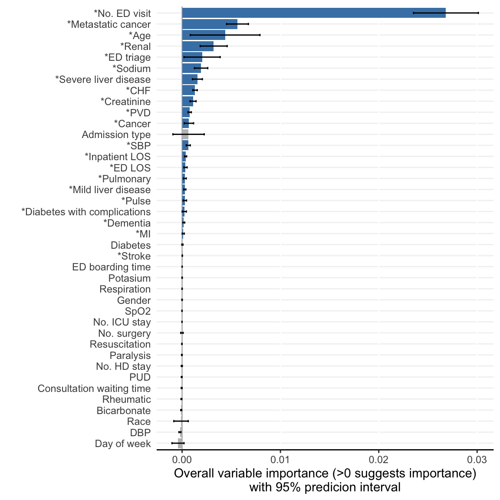

if (!require(AutoScore, quietly = TRUE)) install.packages("AutoScore")
library(AutoScore)
library(tidyverse) # For convenient data manipulation and visualization
# Read the final clean data with 41 candidate variables and the binary outcome
# (`label`):
dat <- readRDS("dat_readmit_or_death.RDS")3 AutoScore-ShapleyVIC for Interpretable Risk Score Development
Risk scores are widely used for clinical decision making and commonly generated from logistic regression models. Machine-learning-based methods may work well for identifying important predictors to create parsimonious scores, but such ‘black box’ variable selection limits interpretability, and variable importance evaluated from a single model can be biased. We propose a robust and interpretable variable selection approach using ShapleyVIC, and integrate it with the AutoScore framework for convenient development of risk scoring models.
In this chapter, we describe the application of the AutoScore-ShapleyVIC workflow using an empirical example in our paper, and provide code for generating a risk score (i.e., Model 2 in the paper) to predict the risk of 30-day readmission or death from 41 candidate variables.
In the next chapter, we provide a fully reproducible example to demonstrate the use of the AutoScore-ShapleyVIC workflow using a simulated data that is publicly available.
Cite the following papers for AutoScore-ShapleyVIC:
Ning Y, Ong ME, Chakraborty B, Goldstein BA, Ting DS, Vaughan R, Liu N. Shapley variable importance cloud for interpretable machine learning. Patterns 2022
Ning Y, Li S, Ong ME, Xie F, Chakraborty B, Ting DS, Liu N. A novel interpretable machine learning system to generate clinical risk scores: An application for predicting early mortality or unplanned readmission in a retrospective cohort study. PLOS Digit Health 1(6): e0000062.
Xie F, Chakraborty B, Ong MEH, Goldstein BA, Liu N. AutoScore: A machine learning-based automatic clinical score generator and its application to mortality prediction using electronic health records. JMIR Medical Informatics 2020; 8(10): e21798.
3.1 [R] Prepare data
This part of the workflow is implemented in R.
3.1.1 Load R packages and data
3.1.2 Prepare training, validation and test datasets
- Use the
split_data()function of the AutoScore package to split data into training (70%), validation (10%) and test (20%) sets for risk score development. - Perform median imputation for vital signs and lab tests based on training set.
Important
- As detailed in Chapter 1, handle missingness (and any other potential data issue) before applying ShapleyVIC.
set.seed(1234)
Out_split <- split_data(data = dat, ratio = c(7, 1, 2))
# Median imputation for vital signs and lab tests based on training set:
train_lab_test <- Out_split$train_set %>% select(Pulse:SODIUM)
train_lab_test_median <- apply(train_lab_test, 2, function(x) median(x, na.rm = TRUE))
Out_split <- lapply(Out_split, function(dat) {
for (nm in names(train_lab_test)) {
dat[, nm] <- ifelse(is.na(dat[, nm]), train_lab_test_median[nm], dat[, nm])
}
dat
})
train_set <- Out_split$train_set
validation_set <- Out_split$validation_set
test_set <- Out_split$test_set- Prepare
output_dirfor ShapleyVIC, usingtrain_setas training set and the first 3500 observations invalidation_setas the explanation data.
output_dir <- "score_output"
if (!dir.exists(output_dir)) dir.create(output_dir)
write.csv(train_set, file = file.path(output_dir, "train_set.csv"),
row.names = FALSE)
write.csv(validation_set[1:3500, ],
file = file.path(output_dir, "validation_set.csv"),
row.names = FALSE)3.2 [Python] Compute ShapleyVIC values
This part of the workflow is implemented in Python.
- Load data and set up input information.
- Data used in this analysis is sensitive, therefore we do not save training data to the output folder to avoid any potential data security issue.
import os
import pandas as pd
output_dir = "score_output"
dat_train = pd.read_csv(os.path.join(output_dir, 'train_set.csv'))
dat_expl = pd.read_csv(os.path.join(output_dir, 'validation_set.csv'))
y_name = 'label'
x_names_cat = ['Gender','Race','Triage_Class_Code','DayofWeek','MI','CHF','PVD',
'Stroke','Dementia','Pulmonary','Rheumatic','PUD','LiverMild','Diabetes',
'DMcx','Paralysis','Renal','Cancer','LiverSevere','Mets','admit_cat',
'resuscitation','VENTILATION']
from ShapleyVIC import model
model_object = model.models(
x=dat_train.drop(columns=[y_name]), y=dat_train[y_name],
x_names_cat=x_names_cat, outcome_type="binary", output_dir=output_dir,
save_data=False
)- Draw 350 nearly optimal models.
model_object.draw_models(u1=0.2, u2=300, m=800, n_final=350)- Compute ShapleyVIC values.
from ShapleyVIC import compute
m_svic = compute.compute_shapley_vic(
model_obj=model_object,
x_expl=dat_expl.drop(columns=[y_name]), y_expl=dat_expl[y_name],
n_cores=10, # running on a PC with 40 logical processors
threshold=0.025
)3.3 [R] Develop risk score
This part of the workflow is implemented in R.
3.3.1 Rank variables using ShapleyVIC
- Compile ShapleyVIC output.
- Since data was not saved in the Python workflow, we explicitly specify it in the R analysis.
- Explicitly specify names of categorical variables, identical to those specified in the Python workflow.
output_dir <- "score_output"
x_names_display <- c(
"Age", "Gender", "Race", "ED LOS", "ED triage",
"ED boarding time", "Consultation waiting time", "No. ED visit",
"Day of week", "Inpatient LOS", "Ventilation", "Resuscitation",
"No. surgery", "No. ICU stay",
"No. HD stay", "Pulse", "Respiration", "SpO2",
"DBP", "SBP", "Bicarbonate", "Creatinine",
"Potasium", "Sodium", "MI", "CHF", "PVD", "Stroke",
"Dementia", "Pulmonary", "Rheumatic", "PUD", "Mild liver disease",
"Diabetes", "Diabetes with complications", "Paralysis", "Renal", "Cancer",
"Severe liver disease", "Metastatic cancer", "Admission type"
)
y_name <- "label"
x_names <- setdiff(names(train_set), y_name)
library(ShapleyVIC)
model_object <- compile_shapley_vic(
output_dir = output_dir, outcome_type = "binary",
x = train_set[, x_names], y = train_set$label,
x_names_cat = c(
'Gender','Race','Triage_Class_Code','DayofWeek','MI','CHF','PVD',
'Stroke','Dementia','Pulmonary','Rheumatic','PUD','LiverMild','Diabetes',
'DMcx','Paralysis','Renal','Cancer','LiverSevere','Mets','admit_cat',
'resuscitation','VENTILATION'
),
x_names = x_names_display
)- Visualize ShapleyVIC values for overall variable importance.
model_plots <- plot(model_object)The following variables are excluded due to zero importance in all models analysed: Ventilation 
- Derive ShapleyVIC-based ensemble variable ranking.
ranking <- rank_variables(model_object, summarise = TRUE, as_vector = TRUE)
ranking No. ED visit Metastatic cancer
1.000000 2.182857
Age Sodium
3.057143 6.931429
Renal ED triage
6.945714 7.428571
Severe liver disease CHF
9.071429 10.365714
Creatinine PVD
10.642857 12.074286
SBP Cancer
14.120000 14.597143
Inpatient LOS ED LOS
16.105714 16.908571
Mild liver disease Pulmonary
17.785714 18.040000
Dementia Diabetes with complications
19.697143 20.291429
Pulse MI
20.691429 21.214286
Stroke
24.185714 3.3.2 Develop risk score using AutoScore workflow
- Modify variable names in training, validation and test sets for publication-ready figures and printed output.
# Current raw variable names:
names(train_set) [1] "label" "Age"
[3] "Gender" "Race"
[5] "ED_LOS" "Triage_Class_Code"
[7] "EDBoardingTime" "ConsultationWaitingTime"
[9] "n_ed_6mth" "DayofWeek"
[11] "LOS_inp" "VENTILATION"
[13] "resuscitation" "Total_Num_Surgery_last1yr"
[15] "Total_icu_count_last1yr" "Total_hd_count_last1yr"
[17] "Pulse" "Respiration"
[19] "SPO2" "BP_Diastolic"
[21] "BP_Systolic" "BICARBONATE"
[23] "CREATININE" "POTASSIUM"
[25] "SODIUM" "MI"
[27] "CHF" "PVD"
[29] "Stroke" "Dementia"
[31] "Pulmonary" "Rheumatic"
[33] "PUD" "LiverMild"
[35] "Diabetes" "DMcx"
[37] "Paralysis" "Renal"
[39] "Cancer" "LiverSevere"
[41] "Mets" "admit_cat" # Modified variable names:
names(train_set)[-1] <- x_names_display
names(train_set) [1] "label" "Age"
[3] "Gender" "Race"
[5] "ED LOS" "ED triage"
[7] "ED boarding time" "Consultation waiting time"
[9] "No. ED visit" "Day of week"
[11] "Inpatient LOS" "Ventilation"
[13] "Resuscitation" "No. surgery"
[15] "No. ICU stay" "No. HD stay"
[17] "Pulse" "Respiration"
[19] "SpO2" "DBP"
[21] "SBP" "Bicarbonate"
[23] "Creatinine" "Potasium"
[25] "Sodium" "MI"
[27] "CHF" "PVD"
[29] "Stroke" "Dementia"
[31] "Pulmonary" "Rheumatic"
[33] "PUD" "Mild liver disease"
[35] "Diabetes" "Diabetes with complications"
[37] "Paralysis" "Renal"
[39] "Cancer" "Severe liver disease"
[41] "Metastatic cancer" "Admission type" names(validation_set)[-1] <- x_names_display
names(test_set)[-1] <- x_names_display- Based on the ensemble variable ranking, apply AutoScore STEP(ii) to select the best model with parsimony plot.
AUC <- AutoScore_parsimony(
train_set = train_set, validation_set = validation_set,
rank = ranking, max_score = 100, n_min = 1, n_max = length(ranking)
)Select 1 Variable(s): Area under the curve: 0.6811
Select 2 Variable(s): Area under the curve: 0.706
Select 3 Variable(s): Area under the curve: 0.7406
Select 4 Variable(s): Area under the curve: 0.7467
Select 5 Variable(s): Area under the curve: 0.7555
Select 6 Variable(s): Area under the curve: 0.7589
Select 7 Variable(s): Area under the curve: 0.7595
Select 8 Variable(s): Area under the curve: 0.7605
Select 9 Variable(s): Area under the curve: 0.7624
Select 10 Variable(s): Area under the curve: 0.7637
Select 11 Variable(s): Area under the curve: 0.765
Select 12 Variable(s): Area under the curve: 0.7674
Select 13 Variable(s): Area under the curve: 0.7696
Select 14 Variable(s): Area under the curve: 0.7708
Select 15 Variable(s): Area under the curve: 0.7708
Select 16 Variable(s): Area under the curve: 0.7713
Select 17 Variable(s): Area under the curve: 0.7713
Select 18 Variable(s): Area under the curve: 0.7712
Select 19 Variable(s): Area under the curve: 0.7713
Select 20 Variable(s): Area under the curve: 0.7715
Select 21 Variable(s): Area under the curve: 0.7718- This parsimony is somewhat smoother than that from random forest-based variable ranking used in AutoScore.
- A feasible choice is to select the top 6 variables, as adding additional variables does not substantially improve model performance.
- Apply AutoScore STEP(iii) to build initial scores from the top 6 variables.
cut_vec <- AutoScore_weighting(
train_set = train_set, validation_set = validation_set,
final_variables = names(ranking)[1:6], max_score = 100
)****Included Variables:
variable_name
1 No. ED visit
2 Metastatic cancer
3 Age
4 Sodium
5 Renal
6 ED triage
****Initial Scores:
================= ========= =====
variable interval point
================= ========= =====
No. ED visit <1 0
[1,3) 14
>=3 32
Metastatic cancer 0 0
1 22
Age <28 0
[28,46) 5
[46,78) 11
[78,87) 14
>=87 19
Sodium <126 11
[126,132) 8
[132,138) 3
[138,141) 0
>=141 3
Renal 0 0
1 8
ED triage P1 8
P2 5
P3 and P4 0
================= ========= =====
***Performance (based on validation set):
AUC: 0.7589 95% CI: 0.7525-0.7654 (DeLong)
Best score threshold: >= 27
Other performance indicators based on this score threshold:
Sensitivity: 0.7546
Specificity: 0.6338
PPV: 0.2888
NPV: 0.9291
***The cutoffs of each variable generated by the AutoScore are saved in cut_vec. You can decide whether to revise or fine-tune them - Users can apply additional AutoScore STEPs for subsequent model fine-tuning and evaluation.